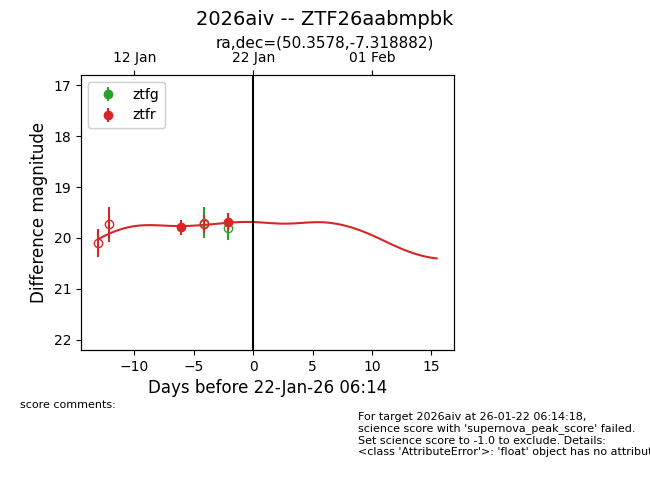
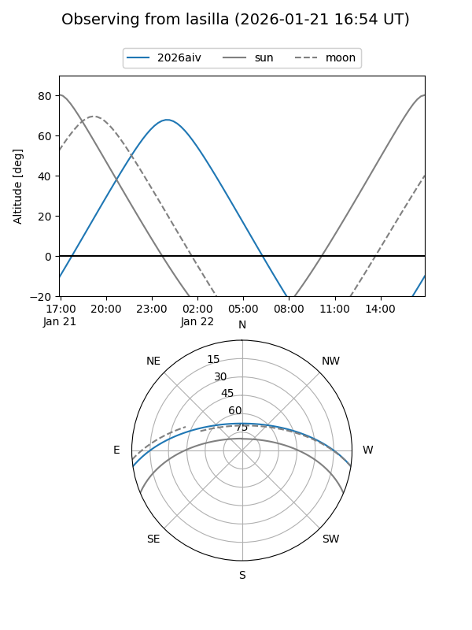
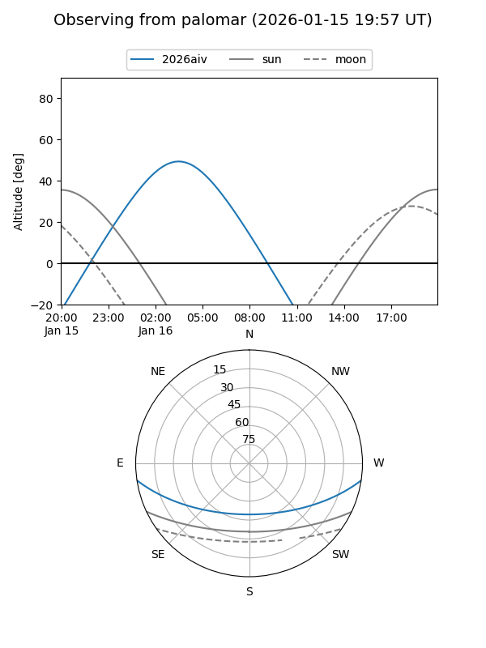
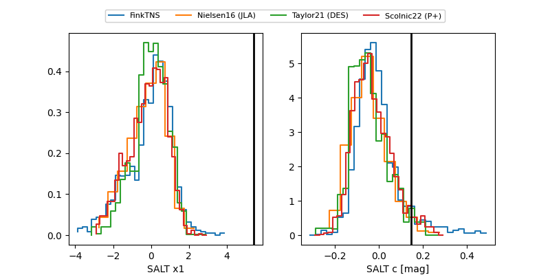

2026aiv
Target 2026aiv at 2026-01-16 06:05
Aliases and brokers:
FINK: link
Lasair: link
ALeRCE: link
TNS: link
YSE: link
alt names
ZTF26aabmpbk (ztf,fink_ztf)
2026aiv (tns,yse)
Coordinates:
equatorial (ra, dec) = 50.3578,-7.31888
equatorial (HMS+DMS) = 03:21:25.88,-07:19:07.98
galactic (l, b) = (190.8099,-49.32564)
Flags:
Photometry:
last ztfr=19.79
1 ztfr detections
Lightcurve

Visibility


Additional plots
